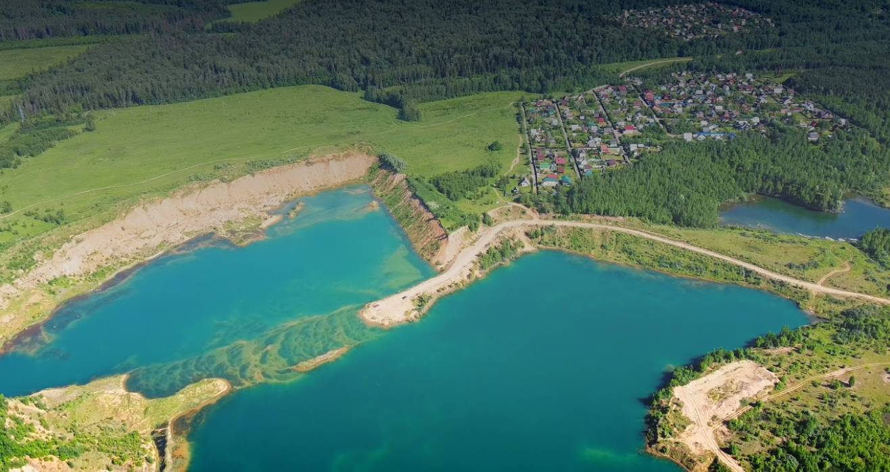

Что окружает участки
озеро сенеж
Озеро Сенеж - крупнейшее водохранилище Подмосковья,
расположенное в Солнечногорске.

Лето - пик активности на Сенеже благодаря теплой погоде и
пляжному сезону. Водные виды спорта: сап-доски, серф-клуб
“Сенеж”, катание на “банане” и водных лыжах. Прокат лодок и
катамаранов. Вейкбординг и дайвинг доступны через местные
клубы. Рыбалка, спорт на суше, кемпинг.
Осень на Сенеже - время спокойного отдыха, но активные
развлечения важны, особенно в сентябре, когда ещё тепло.
Набережная пустеет, что идеально для прогулок. Активности
осенью: Рыбалка, велосипедные и пешие прогулки, конные
прогулки, фотосессии.
Зимой - Сенеж превращается в центр зимних видов спорта. Лёд
становится достаточно толстым для безопасного катания.
Активности в зимнее время: рыбалка, катание на коньках, лыжные
прогулки, кайтсерфинг, снегоходы и сноубординг.
Весна - переходный сезон, когда активность увеличивается к
маю. Погода переменчива, но озеро оживает. Активности весной:
рыбалка, прогулки, сап-доски.
пруд нагульный
Излюбленная рыбаками и туристами зона отдыха. Здесь, среди
живописной природы и чистых водоемов хорошо всегда!
Адрес: Ленинградское шоссе, 53км от МКАД
Солнечногорск
Телефоны: (985) 992-98-09
Цены: от 1500 до 1800 руб.
Время работы: 6:00 - 17:00
Солнечногорск
Телефоны: (985) 992-98-09
Цены: от 1500 до 1800 руб.
Время работы: 6:00 - 17:00
www.rybhoz-senezh.ru
-
РЫБАЛКА НА ПРУДУЗдесь, среди живописной природы и чистых водоемов хорошо всегда!
-
РЫБОЛОВНЫЙ КЛУБРыболовный клуб оказывает услуги по организации рыбалки, рыболовных турниров, туров и т.д.
-
РЫБОЛОВНЫЕ СОРЕВНОВАНИЯРыболовные турниры - это не только возможность продемонстрировать свои навыки и умения
-
ОТДЫХ НА ПРИРОДЕПорадуйте себя, Ваших родных и друзей прекрасным отдыхом на природе.
карьер загорье
Карьерное озеро с чистейшей водой и песчанными берегами,
расположенное в деревне Загорье, недалеко от оз. Сенеж.

Расположен в деревне Загорье.
Летом предназначено для купания, рыбалки, походов и прогулок,
осенью - для рыбалки и фотосессий, зимой - для подледной рыбалки и
лыж, весной - для прогулок и наблюжений за природой. Минимальная
инфрастуктура преполагает что отзых будет “диким”.